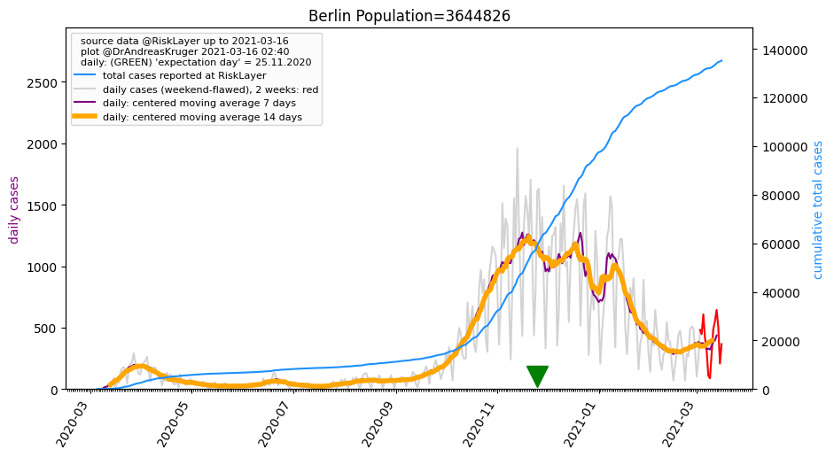
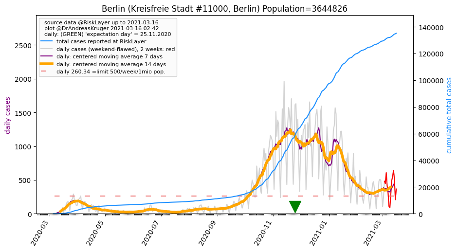

Up to about.html or to overview of Germany
 Berlin, and its 1 districts (29.04.2020)
Berlin, and its 1 districts (29.04.2020)
total cases: [9, 15, 19, 28, 40, 48, 58, 90, 137, 174, 263, 283, 332, 383, 519, 688, 868, 1025, 1071, 1219, 1425, 1645, 1937, 2152, 2337, 2462, 2581, 2777, 2993, 3223, 3486, 3626, 3687, 3862, 4038, 4212, 4357, 4446, 4553, 4583, 4667, 4736, 4870, 4971, 5091, 5187, 5225, 5265, 5341, 5355, 5476, 5532, 5607, 5644, 5677, 5738, 28]
population: 3,644,826 --> current prevalence: 7 known infected per 1 million population
Berlin's 1 Kreise
Sorted by 'center day'
| 05.03.2020 | 06.03.2020 | 07.03.2020 | 08.03.2020 | 09.03.2020 | 10.03.2020 | 11.03.2020 | 12.03.2020 | 13.03.2020 | 14.03.2020 | 15.03.2020 | 16.03.2020 | 17.03.2020 | 18.03.2020 | 19.03.2020 | 20.03.2020 | 21.03.2020 | 22.03.2020 | 23.03.2020 | 24.03.2020 | 25.03.2020 | 26.03.2020 | 27.03.2020 | 28.03.2020 | 29.03.2020 | 30.03.2020 | 31.03.2020 | 01.04.2020 | 02.04.2020 | 03.04.2020 | 04.04.2020 | 05.04.2020 | 06.04.2020 | 07.04.2020 | 08.04.2020 | 09.04.2020 | 10.04.2020 | 11.04.2020 | 12.04.2020 | 13.04.2020 | 14.04.2020 | 15.04.2020 | 16.04.2020 | 17.04.2020 | 18.04.2020 | 19.04.2020 | 20.04.2020 | 21.04.2020 | 22.04.2020 | 23.04.2020 | 24.04.2020 | 25.04.2020 | 26.04.2020 | 27.04.2020 | 28.04.2020 | 29.04.2020 | Kreis | Prev. p. 1mio | Population | center day | Bundesland | info |
| 9 | 15 | 19 | 28 | 40 | 48 | 58 | 90 | 137 | 174 | 263 | 283 | 332 | 383 | 519 | 688 | 868 | 1025 | 1071 | 1219 | 1425 | 1645 | 1937 | 2152 | 2337 | 2462 | 2581 | 2777 | 2993 | 3223 | 3486 | 3626 | 3687 | 3862 | 4038 | 4212 | 4357 | 4446 | 4553 | 4583 | 4667 | 4736 | 4870 | 4971 | 5091 | 5187 | 5225 | 5265 | 5341 | 5355 | 5476 | 5532 | 5607 | 5644 | 5677 | 5738 | Berlin_KS | 1574 | 3,644,826 | 28.9 | Berlin | |
Berlin (Kreisfreie Stadt #11000, Berlin) Population=3644826 AGS=11000
Neighbours within 50 km: Potsdam_KS, Barnim_LK, Oberhavel_LK, Teltow-Fläming_LK
total cases: [9, 15, 19, 28, 40, 48, 58, 90, 137, 174, 263, 283, 332, 383, 519, 688, 868, 1025, 1071, 1219, 1425, 1645, 1937, 2152, 2337, 2462, 2581, 2777, 2993, 3223, 3486, 3626, 3687, 3862, 4038, 4212, 4357, 4446, 4553, 4583, 4667, 4736, 4870, 4971, 5091, 5187, 5225, 5265, 5341, 5355, 5476, 5532, 5607, 5644, 5677, 5738]
Kreisfreie Stadt Berlin population: 3,644,826 --> current prevalence: 1574 known infected per 1 million people.
Back to top or: Up to about.html